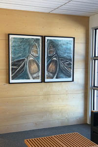
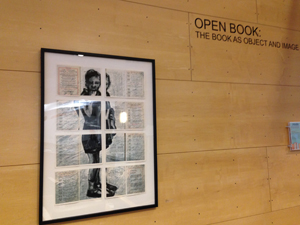
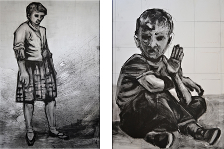

2019

- Mutual Makers: An Exhibition of CMC Faculty, Staff and Guest Artists
Colorado Mountain College, Aspen, CO
2018

- Artist in Residence: Pop up Exhibit
Colorado College, Colorado Springs, CO
- Open Book: The Book as Object and Image
Colorado Mountain College, Aspen, CO
2017

- Reminisce: A Tribute to 50 Years of Art
Colorado Mountain College, Aspen, CO